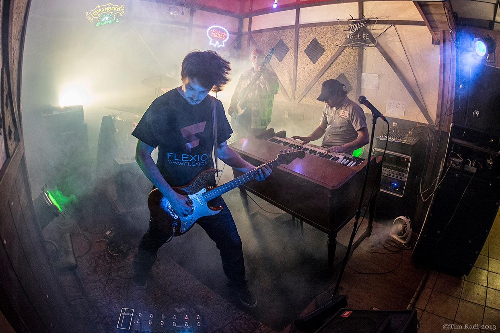

Equipment
The Pistols at Dawn use a mix of surf, punk, and vintage-inspired gear to build their sound. From tube amps and organs to durable touring drums and bass rigs, the band’s setup has always been part of the atmosphere.

Drums
Alex plays Mapex Mars drum shells with DW hardware and a DW 5000 pedal. His cymbal setup includes Zildjian A Custom cymbals, including a 22-inch ping ride, 18-inch and 16-inch crashes, and A Custom hi-hats.
The snare setup includes a die-cast hoop and brass snare wires, with a Pork Pie throne rounding out the kit.
Guitar
Alexei plays a custom orange sparkle Strat-style guitar, a key part of the band’s visual and sonic identity. His aggressive tremolo-picked playing helps push the band beyond traditional surf rock.
His main amp is a Fender Twin Reverb tube combo, providing the clean but powerful reverb-heavy sound central to the band’s style.

Alexei’s Guitar Rig in Action
A live shot from the Mr. Roberts era showing Alexei’s orange sparkle Strat-style guitar, one of the most recognizable pieces of gear associated with The Pistols at Dawn.
Paired with a Fender Twin Reverb, the guitar delivers the bright, cutting, reverb-heavy tone that drives much of the band’s sound.
Bass
Matt has used the same blue Hamer bass for most of the band’s run, making it one of the most consistent pieces of gear in The Pistols at Dawn.
His amplification has changed over the years, but lately he has been using a vintage-style Fender bass cabinet along with assorted bass rigs.
Organ and Keys
Tim uses a custom Farfisa-style body with a wood top, housing a Nord Electro configured for organ sounds. He often uses Farfisa-style settings, but the setup allows him to summon a wider range of organ voices as needed.
Tim is also a vintage organ enthusiast and technician. Over the years he has used vintage Hammonds in both live performance and recording, and in the practice studio he is usually seated at a Hammond B3.